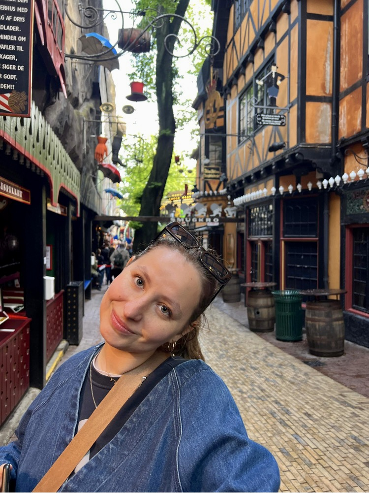

Jeg hedder Rose, jeg er 23 år og jeg bor i en lille lejlighed på Østerbro. Jeg valgte at studere multimediedesign da jeg elsker at arbejde med medier, storytelling og visualitet – og så ville jeg gerne prøve kræfter med grafisk design især. Jeg har siden siden 2019 beskæftiget mig meget med producering af film og tv. Jeg har gået på Vallekilde Højskole, KBH Film & Fotoskole og senest på Film & Tv-produktionsuddannelsen på NEXT. Her har mine fokuspunkter primært været Tv-tilrettelægning, manuskriptforfatning og klipning.
- KEA, MULTIMEDIEDESIGN, FEB 2022 -
- NEXT UDDANNELSE KØBENHAVN, FILM & TV-PRODUKTIONSUDDANNELSEN, AUG 2020 - DEC 2021
- KBH FILM & FOTOSKOLE, FILM BASIS & FILM OVERBYGNING, AUG 2019 - JUNI 2020
-VALLEKILDE HØJSKOLE, TILRETTELÆGGERLINJEN, JANUAR 2019 - JUNI 2019